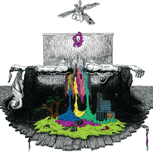
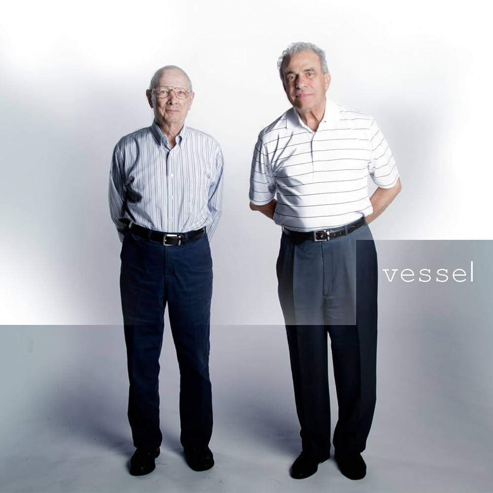
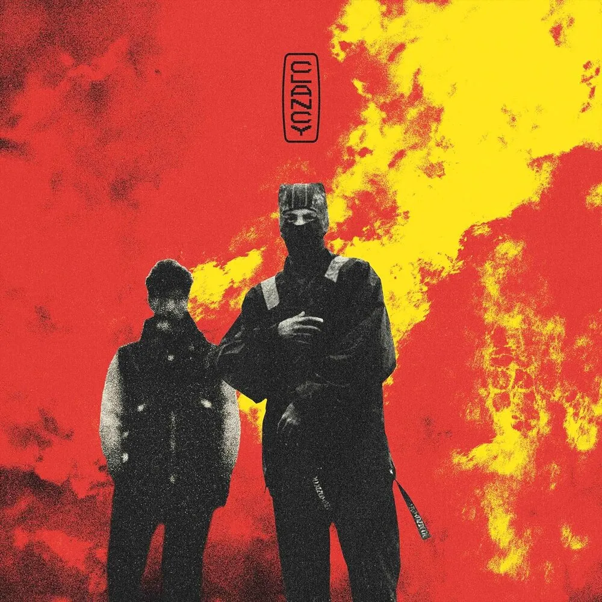
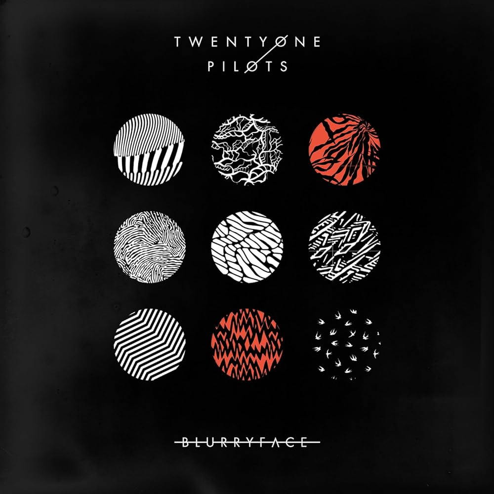
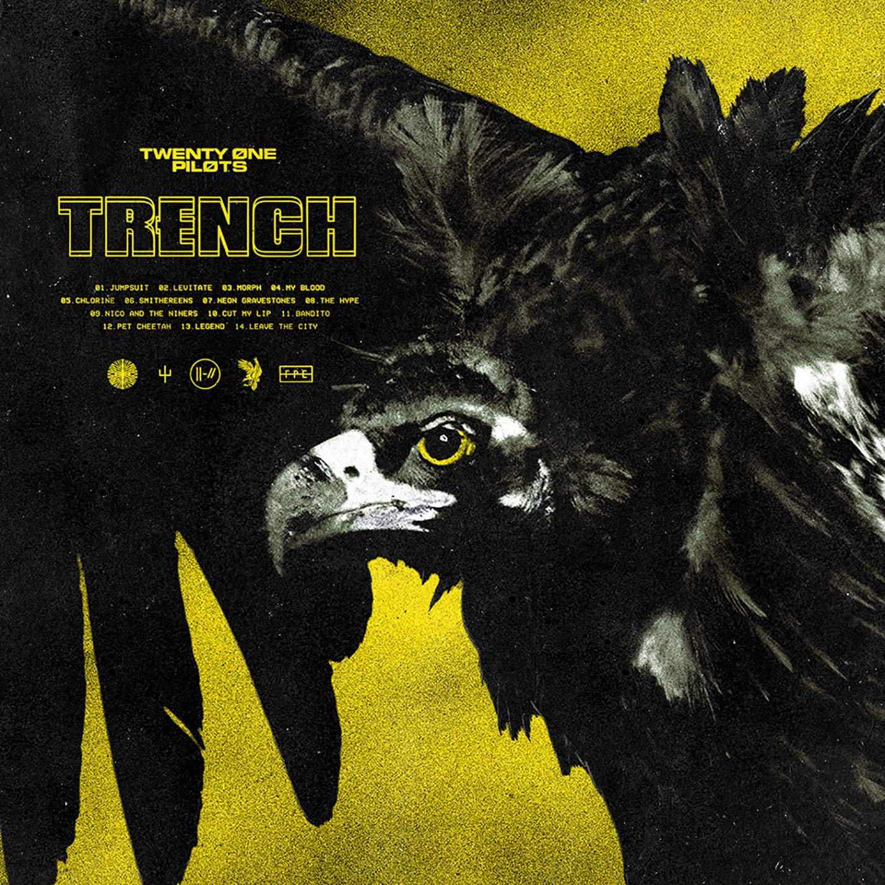
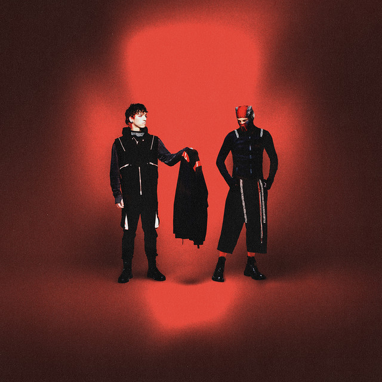
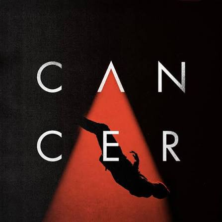
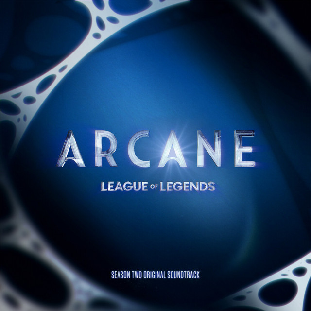

CUÉNTAME, ¿QUÉ ESTAS SINTIENDO?
FELICIDAD, MOTIVACIÓN
TRISTEZA, MELANCOLÍA
TUS RECOMENDADAS POR MI...

Johnny Boy - Twenty One Pilots

Semi-automatic - Vessel
La historia detras de Twenty One Pilots es una reflexión sobre la salud mental.
TUS RECOMENDADAS POR MI...

Lavish - ClancyLa historia detras de Twenty One Pilots es una reflexión sobre la salud mental.
TUS RECOMENDADAS POR MI...

Tear in my heart - Blurryface

Smithereens - TrenchLa historia detras de Twenty One Pilots es una reflexión sobre la salud mental.
TUS RECOMENDADAS POR MI...

Cottonwood - Breach

Cancer - Cover de My Chemical RomanceLa historia detras de Twenty One Pilots es una reflexión sobre la salud mental.
TUS RECOMENDADAS POR MI...
At the risk of feeling dumb - Clancy

La historia detras de Twenty One Pilots es una reflexión sobre la salud mental.
TUS RECOMENDADAS POR MI...

The Line - Legue of LegendsLa historia detras de Twenty One Pilots es una reflexión sobre la salud mental.
TUS RECOMENDADAS POR MI...
Before you start your day - Twenty One Pilots
La historia detras de Twenty One Pilots es una reflexión sobre la salud mental.
TUS RECOMENDADAS POR MI...
Addict with a pen - Twenty One Pilots
A car, a torch, a death - Twenty One Pilots
La historia detras de Twenty One Pilots es una reflexión sobre la salud mental.
TUS RECOMENDADAS POR MI...
La historia detras de Twenty One Pilots es una reflexión sobre la salud mental.
En en el album Clancy vemos el trabajo que cuesta el dejar ir y enfrentar todas estas emociones.